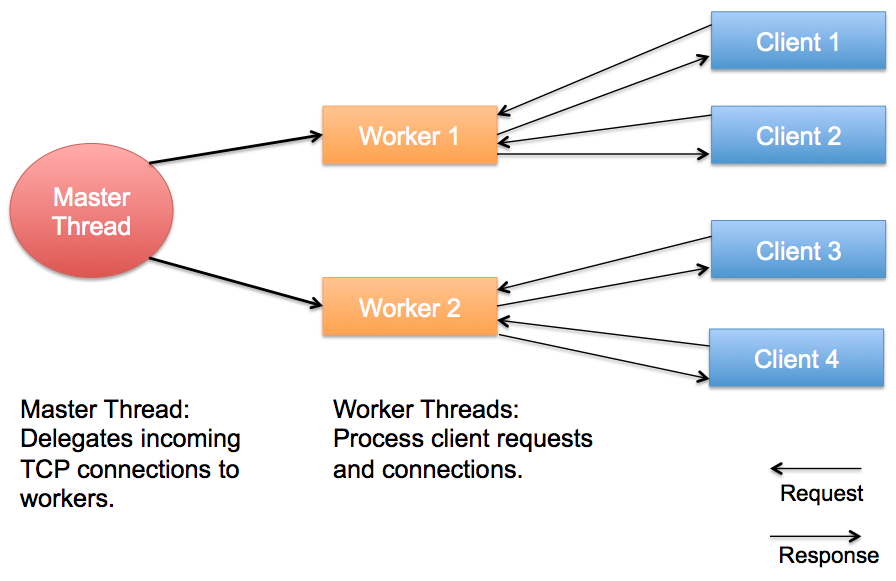
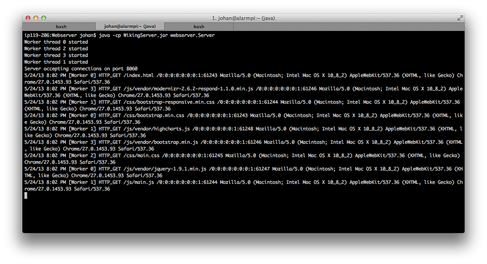

Highly performant, event driven HTTP file server.
Wiking is a a highly performant, event driven HTTP file server. The server is written in Java 1.7. It uses the native sendfile(2) linux call to achieve high throughput, and an event driven architecture for concurrency. To make use of multiple cores in modern computers, one "worker" thread is created for each core on the server to handle requests.
This project was created by four students at Lund University as a project in the course Network Programming (EDA095).
The chart above shows how fast different web servers can serve files over HTTP. Wiking is almost twice as fast as Apache 2, the most common web server. Nginx on the other hand, performs better than our server. Considering that Apache and Nginx both are written in C which offers superior performance to Java, Wiking performs well given the circumstances. We're happy that a web server written in Java can perform better than a alternative written in C.


The screenshot above shows the server running with its log attached to the terminal. The first line shows the command used to start the server.
Basic UNIX administration skills are assumed in this manual. The only dependency is Java 1.7. The server should run on any operating system, but performs best on the Linux kernel.
Export the AWEB_DOCUMENT_ROOT environment variable to point to a web document root directory. For example:
export AWEB_DOCUMENT_ROOT=/var/www/Do the same with a PORT variable:
export PORT=8060
Now start start the server. A text file with MIME type mappings needs to be present in the current working directory. This is included when running the server from the git repository root directory. The server can be started with the following command:
java -cp WikingServer.jar webserver.Server
Students at Lund University, Institute Of Technology
Johan Bäversjö
Mikael Gråborg
Petter Henriksson
Mergim Rama